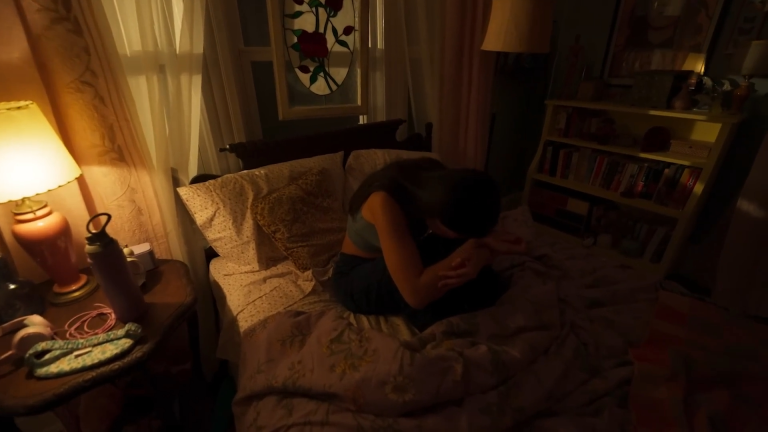
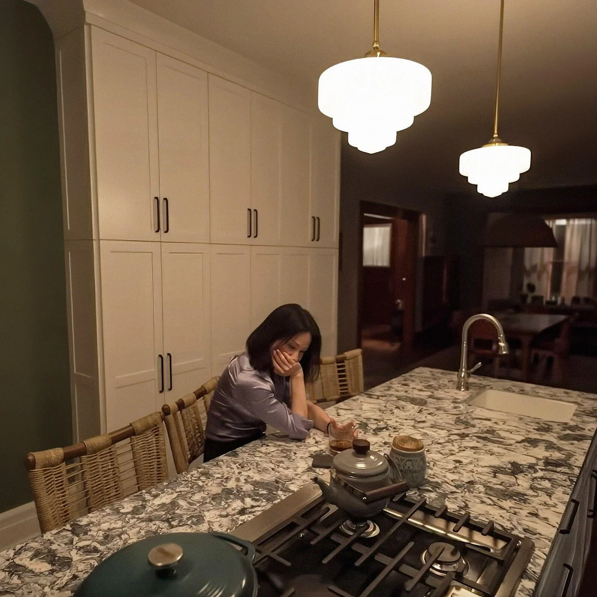
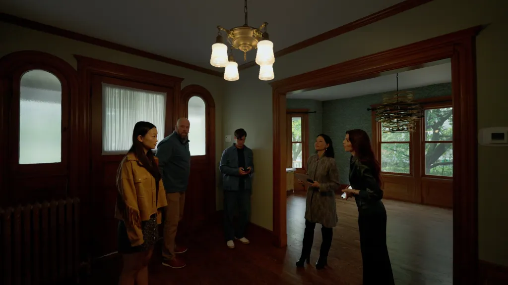

A family moves into a new and seemingly normal house in the suburbs, but after strange events occur, they quickly realize they aren't alone. Tensions rise between the family members and the presence starts to disrupt their lives in unimaginable ways.
Presence is an extremely fascinating film. It's a supernatural story told through the perspective of the presence itself. The camera is always firmly planted in the first person view of this spirit, and we don't know who we are or what we're doing. For that alone, this is a film worth giving a shot. Very few others can give you an experience like this does.
This is for sure a horror movie, but I can imagine a lot of people being dissapointed with this. This is not a Conjuring or a Saw type of movie. This is a family drama that slowly builds up tension with a few scary moments here and there. There is something creepy about the idea of viewing the world through the eyes of an unknown being. The melodrama here is quite good, Steven Soderbergh and David Koep made a film that satisfies a very specific niche. A movie that has thrills, but settles in and takes it's time. It's about being invested in this family and what each character is going through. Sometimes you have to let go and enjoy the ride.
Solid cast all around. Lucy Liu is surprisingly understated in this, but she gets the most bone chilling scene of the whole movie. Callina Liang is the lead in this, and for it to be only her second movie, she's a natural and I'd love to see her in more. Eddy Mayday is too good at being the annoying disinterested brother, and Chris Sullivan is the most heartwarming father in this movie. Not going to be for everyone, but if you want something slower based around tension and sadness, that still manages to excite and thrill, this is an underappreciated movie you'll want to watch.